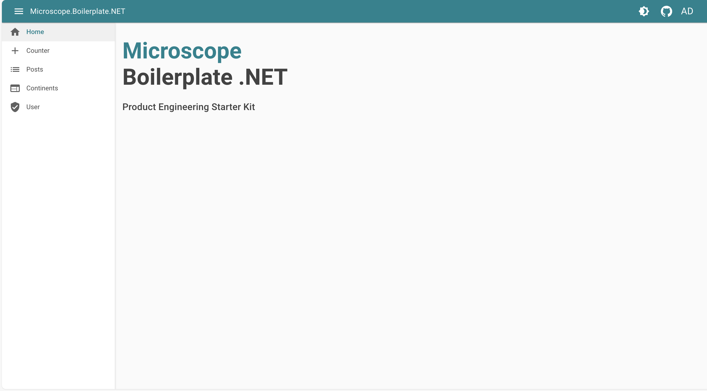

Blazor
Blazor is a .NET frontend web framework that supports both server-side rendering and client interactivity in a single programming model

Features
Material UI
- Add material UI design system
- color primary by techno
- layout with app bar & collapsable sidemenu to rail
💡 Easy intergration using MudBlazor. Excellent DX !
<MudLayout>
<MudAppBar Elevation="1" Color="Color.Primary" Dense="true">
<MudIconButton Icon="@Icons.Material.Outlined.Menu" Color="Color.Inherit" Edge="Edge.Start" OnClick="((e) => ToggleDrawer())"/>
<MudText>Microscope.Boilerplate.NET</MudText>
@if (!HostingEnvironmentService.IsWebAssembly)
{
<MudProgressCircular Class="ml-2" Size="Size.Small" Color="Color.Inherit" Indeterminate="true"></MudProgressCircular>
}
<MudSpacer/>
<MudIconButton Icon="@Icons.Material.Filled.Brightness4" Color="Color.Inherit" OnClick="ToggleTheme"/>
<MudIconButton Href="https://github.com/bhtz/microscope-boilerplate" Target="_blank" Icon="@Icons.Custom.Brands.GitHub" Color="Color.Inherit"/>
<LoginDisplay />
</MudAppBar>
<MudDrawer @bind-open="DrawerOpen" ClipMode="DrawerClipMode.Always" Elevation="2" Variant="DrawerVariant.Mini" MiniWidth="60px">
<NavMenu/>
</MudDrawer>
<MudMainContent Class="mt-16 pa-4">
@Body
</MudMainContent>
</MudLayout>
private bool DrawerOpen { get; set; } = true;
public void ToggleDrawer()
{
DrawerOpen = !DrawerOpen;
}
Version endpoint
💡 Expose custom server endpoint to "/version" using a simple asp net minimal API endpoint
app.MapGet("/version", () => new { Version = "1.0.0" });
Server side rendering
- Expose frontend web application with SSR
- pre-rendering page with data
- fallback into interactive UI
💡 Let blazor handle the magic :
Program.cs
app.MapRazorComponents<Host>()
.AddInteractiveServerRenderMode()
.AddInteractiveWebAssemblyRenderMode()
.AddAdditionalAssemblies(typeof(_Imports).Assembly);
Host.cs
<body>
<Routes @rendermode="InteractiveAuto" />
<script src="_framework/blazor.web.js"></script>
</body>
OIDC & cookie authentication
- Handle OIDC auth over keycloak SSO
- Cookie & antiforgery token
- Login / Logout clean process
💡 Simple OIDC asp net authentication
services.AddAuthorization();
services.AddAuthentication(options =>
{
options.DefaultScheme = CookieAuthenticationDefaults.AuthenticationScheme;
options.DefaultChallengeScheme = OpenIdConnectDefaults.AuthenticationScheme;
})
.AddCookie(CookieAuthenticationDefaults.AuthenticationScheme)
.AddOpenIdConnect(OpenIdConnectDefaults.AuthenticationScheme, options =>
{
options.Authority = oidcAuthenticationOptions.Authority;
options.ClientId = oidcAuthenticationOptions.ClientId;
options.ClientSecret = oidcAuthenticationOptions.ClientSecret;
options.SignInScheme = CookieAuthenticationDefaults.AuthenticationScheme;
options.ResponseType = OpenIdConnectResponseType.Code;
options.RequireHttpsMetadata = false;
options.SaveTokens = true;
options.AuthenticationMethod = OpenIdConnectRedirectBehavior.RedirectGet;
options.TokenValidationParameters = new TokenValidationParameters
{
NameClaimType = oidcAuthenticationOptions.NameClaimType,
RoleClaimType = oidcAuthenticationOptions.RoleClaimType
};
foreach (var item in oidcAuthenticationOptions.Scopes)
{
options.Scope.Add(item);
}
});
Proxying API
- Proxying downsteam REST API
- Proxying jsonplaceholder "todos" API with route "/api/todos"
- https://jsonplaceholder.typicode.com/
💡 Using YARP
services
.AddReverseProxy()
.LoadFromConfig(configuration.GetSection("ReverseProxy"));
"ReverseProxy": {
"Routes": {
"post-service" : {
"ClusterId": "post-service",
"Match": {
"Path": "/api/todos/{**catch-all}"
},
"Transforms": [
{
"PathRemovePrefix": "/api"
}
]
}
},
"Clusters": {
"post-service": {
"Destinations": {
"post-service": {
"Address": "https://jsonplaceholder.typicode.com"
}
}
}
}
}
GraphQL gateway
- Gateway GraphQL over downstream subgraph
- Gateway over "countries" graph trevorblades
- https://countries.trevorblades.com/
💡 Using Hotchocolate GraphQL gateway
GraphQL configuration
var builder = services.AddGraphQLServer();
foreach (var scalar in gatewayOptions.Scalars)
{
builder.AddType(new AnyType(scalar));
}
foreach (var schema in gatewayOptions.Schemas)
{
services
.AddHttpClient(schema.Name, c => c.BaseAddress = new Uri(schema.Url))
.AddHttpMessageHandler<BffAuthenticationHeaderHandler>();
builder.AddRemoteSchema(schema.Name);
var subgraph = services.AddGraphQL(schema.Name);
foreach (var scalar in gatewayOptions.Scalars)
{
subgraph.AddType(new AnyType(scalar));
}
}
builder.AddTypeExtensionsFromFile("./stitching.graphql");
appsettings.development.json
"GraphQLGateway": {
"Scalars" : ["date", "timestamptz", "uuid"],
"Schemas": [
{
"Name": "Countries",
"Url": "https://countries.trevorblades.com/"
}
]
},
Auto generated SDK
- SDK to consume BFF GraphQL schema
- Auto generate it from BFF url
- Use it in frontend application
💡 Using Hotchocolate Strawberry Shake
Light / Dark theme
- Theme switcher implementation
💡 Using MudBlazor "MudThemingProvider"
Defining theme
public static MudTheme DarkTheme = new MudTheme()
{
Palette = new Palette()
{
Black = "#27272f",
Background = "#32333d",
BackgroundGrey = "#27272f",
Primary = Colors.Cyan.Darken3,
Surface = "#373740",
DrawerBackground = "#27272f",
DrawerText = "rgba(255,255,255, 0.50)",
AppbarBackground = "#27272f",
AppbarText = "rgba(255,255,255, 0.70)",
TextPrimary = "rgba(255,255,255, 0.70)",
TextSecondary = "rgba(255,255,255, 0.50)",
ActionDefault = "#ffffff",
ActionDisabled = "rgba(255,255,255, 0.26)",
ActionDisabledBackground = "rgba(255,255,255, 0.12)",
DrawerIcon = "rgba(255,255,255, 0.50)"
}
};
Apply theme
<MudThemingProvider Theme="_currentTheme" />
I18N
- I18N switcher : FR & EN
💡 Using resources files & Localization